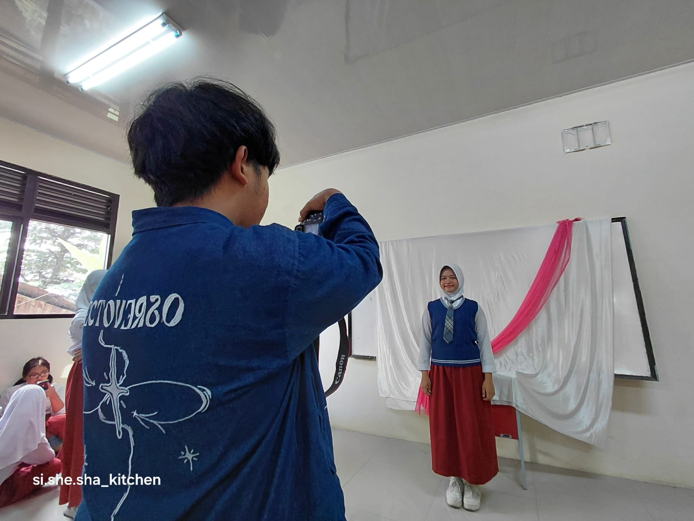

EXPERIENCE
Cv Saya1. Prakerin di Pusat Sarana Pengendalian Lingkungan Hidup
IT Support Trainee | Agustus 2025 - September 2025


Saat saya duduk di bangku SMK, saya di beri kesempatan untuk melakukan Prakerin di Pusat Sarana Pengendalian Lingkungan Hidup yang merupakan laboratorium rujukan untuk pengujian dan analisis lingkungan milik Kementerian Lingkungan Hidup. Selama prakerin, saya terlibat dalam berbagai tugas dan proyek yang berkaitan dengan pengelolaan dan pemeliharaan sistem IT, termasuk pemecahan masalah perangkat keras dan perangkat lunak, serta dukungan teknis untuk staf laboratorium. Pengalaman ini memberikan saya wawasan yang berharga tentang bagaimana teknologi informasi dapat mendukung operasi laboratorium dan penelitian lingkungan.
Surat Keterangan Prakerin2. Freelance di Bidang Fotografi
Freelance Photographer | Mei 2026

Pada Pertengahan 2026, saya dipercaya untuk menjadi seorang fotografer untuk kebutuhan pembuatan BTS atau Buku Tahunan Sekolah yang dimana itu menjadi perjalanan fotografi komersil pertama yang saya lakukan, karena sebelumnya sebelumnya saya hanya pernah melakukan fotografi untuk keperluan pribadi dan sebagai seorang divisi media dan informasi pada sebuah organisasi masyarakat. Dimulai melakkan sesi foto saat saat mereka melakukan aktifitas di dalam kelas, lalu menentukan kelompok yang akan di jadikan foto perkelompok, kemudian dilanjut dengan foto satu angkatan yang mempertemukan banyak kelas, lalu yang terakhir sesi foto secara personal untuk kebutuhan biodata masing masing.